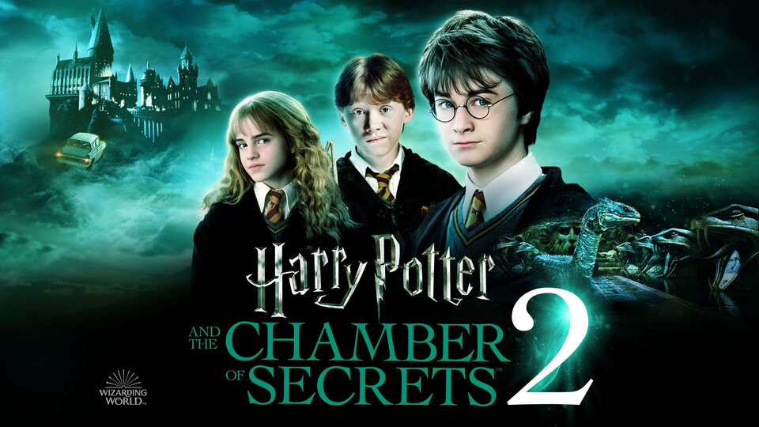

Plot Summary
In this installment, Harry Potter returns to Hogwarts after spending a dreadful summer with his aunt and uncle, the Dursleys. Before leaving, Harry receives a strange warning from a house-elf named Dobby, who tells him that he should not return to Hogwarts, as great danger awaits him. Despite the warning, Harry reunites with his friends, Hermione Granger and Ron Weasley. Soon after their return, strange and terrifying events begin to happen. Students are found petrified, and a mysterious message is scrawled on the walls: "The Chamber of Secrets has been opened. Enemies of the heir, beware." Legend has it that the Chamber of Secrets, created by one of the founders of Hogwarts, Salazar Slytherin, houses a monstrous creature that can only be controlled by the Heir of Slytherin. As fear spreads throughout the school, Harry, Hermione, and Ron set out to investigate who the Heir might be and how to stop the attacks. During their investigation, Harry discovers he can speak Parseltongue, the language of snakes, which leads others to suspect he might be the Heir. However, the trio eventually learns that Tom Riddle (a young Lord Voldemort) is the true heir. They uncover that Ginny Weasley, Ron’s younger sister, has been possessed by Riddle through an enchanted diary and is being used to reopen the Chamber. In the climactic battle, Harry faces the basilisk, the creature inside the Chamber, and defeats it using the sword of Gryffindor and the help of Fawkes, Dumbledore’s phoenix. He also destroys the diary, freeing Ginny and thwarting Riddle's plan.
Visual and Special Effects
The movie uses a mix of practical effects and CGI to bring the magical world to life, including the horrifying basilisk, Fawkes the phoenix, and the enchanted flying car. The production design immerses viewers in the rich, detailed world of Hogwarts, with darker, more ominous visuals compared to the first film.
Reception
The movie was well-received by audiences and critics, praised for its faithful adaptation of the source material, visual effects, and deeper exploration of the Harry Potter universe. It grossed over $879 million worldwide, further solidifying the franchise's global success.